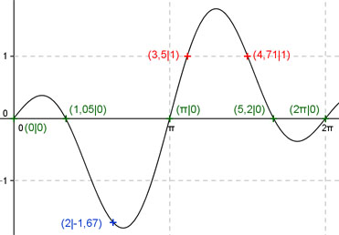
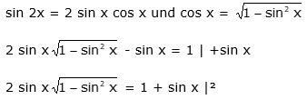
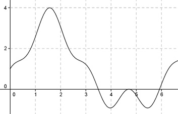

Aufgabe 224 Ergänzen Sie die Wertetabelle für x zwischen 0 und 2π: y = sin 2x - sin x x 2 3,5 oder 4,71 y -1,67 1 Periode = 2π Berechnung der Nullstellen: 0 = sin 2x - sin x mit sin 2x = 2 * sin x * cos x 2 sin x * cos x - sin x = 0 sin x * (2 * cos x - 1) = 0 sin x = 0 --> x = 0 + k * π mit k =1, 2, 3,... 2 * cos x = 1 |:2 cos x = 0,5 --> arc cos 0,5 = 1,05 gerundet x1 = 0 oder 0°, x2 = π oder 180°, x3 = 2π oder 360°. x4 = 1,05 gerundet oder 60,2°, x5 = (2π - 1,05) = 5,2 gerundet oder 297,9°. Berechnung der Amplitude A: 4,71 - 3,5 Sie tritt an der Stelle x = 3,5 + (------------) = 2 = 4,1 oder 235° gerundet auf. Amplitude = f(235°) = A = |sin 2 * 235° - sin 235°| = |0,94 - (-0,82)| = 1,76  Funktionswert an einer Stelle x ermitteln: x = 2 f(2) = sin (2 * 2) - sin 2 = = sin (2 * 114,6°) - sin 114,6° = -1,67 gerundet Berechnung der x-Werte für y = f(x) = 1 f(x) = 1 eingesetzt, existiert zweimal zwischen π und 2π bzw. 180° und 360° (siehe Graph). An welchen Stellen x die Funktion den Wert 1 annimmt, ist elementar nicht zu ermitteln. Zur Berechnung wendet man ein Näherungsverfahren an, hier die Regula falsi. sin 2x - sin x = 1 mit  4 sin2x(1 - sin2x) = 1 + 2 sinx + sin2x 4 sin2 x - 4 sin4 x = 1 + 2 sin x + sin2 x |+4 sin4 x 4 sin2 x = 1 + 2 sin x + sin2 x + 4 sin4 x |-4 sin2 x 4 sin4 x - 3 sin2 x + 2 sin x + 1 = 0 Als Funktion: y = 4 sin4 x - 3 sin2 x + 2 sin x + 1  Abgelesen: Nullstellen zwischen 3,4 und 3,6, zwischen 4,6 und 4,8 und zwischen 5,6 und 6. (Vorzeichenwechsel für f(x), bzw. Berührpunkt) Regula falsi: x0 = gesuchte Nullstelle x1 * |y(x2)| + x2 * |y(x1)| x0 = ------------------------------ |y(x1)| + |y(x2)| Nullstelle x0 zwischen 3,4 und 3,6 mit Excel ermittelt: A B C D E F G H I J 3,4 3,6 0,32 0,31 1,09 1,12 2,20 0,63 3,50 -0,01 3,4 3,50 0,01 0,31 0,02 1,08 1,10 0,32 3,50 0,00 3,4 3,50 0,00 0,31 0,00 1,08 1,08 0,31 3,50 0,00 3,4 3,50 0,00 0,31 0,00 1,08 1,08 0,31 3,50 0,00 Die gesuchte Nullstelle ergibt sich nach mehreren Näherungen mit ausreichender Genauigkeit zu x01 = 3,5 gerundet. Nullstelle x02 zwischen 4,6 und 4,8 ergibt sich nach dem selben Verfahren zu 4,7 gerundet. Nullstelle x03 zwischen 5,6 und 6 ergibt sich nach dem selben Verfahren zu 5,93 gerundet. Weil zwischendurch quadriert wurde, ist eine Probe nötig. Für x01: sin (2 * 3,5) - sin 3,5 = 0,657 - (-0,35) = 1 Lösung Für x02: sin (2 * 4,71) - sin 4,71 = 0,0048 - (-0,9999) = 1 Lösung Für x03: sin (2 * 5,93) - sin 5,93 = - 0,649 - (- 0,346) = -0,3 keine Lösung Gesuchte x-Werte: x1 = 3,5 oder 200,5° x2 = 4,71 oder 269,9°